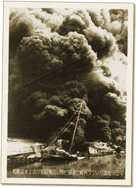
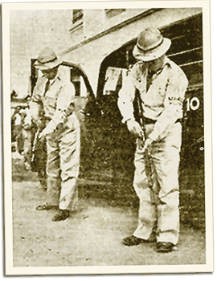

|
j
a v a s c r i p t |
January 2, 1942 — First Day of the Occupation
Pier 7 burned last night, joining a long list of deliberately lit fires throughout Manila. The army had been thorough, destroying everything of military value down to the last garage tool and rope except for bridges and public utilities.

The USAFFE set fire to boats on the Pasig before abandoning the city.
Scores entered the Port Area yesterday by every means of transportation imaginable to clean the place out before the Japanese arrived. The Quartermaster’s distributed food on a first-come first-served basis, and the Philippine Cold Stores gave meat away freely. Later, the sanctioned looting got out of control as the crowd broke into shops and Chinese grocery stores. Made a quick trip this morning with Dad to check the store†. As I stood protectively for a moment before its huge glass panes, it occurred to me that if one broke, the store would be looted clean in an instant. We secured it as best we could then returned home. On the way back, a low flying Japanese plane dropped leaflets: Save the beautiful Philippines Six plainclothes Japanese on a ‘36 Ford V8 came by at 1145 looking for the Chinese next door (by name) and checking the nationalities of others. So far the Japanese appear to be bothering only the Chinese, British and Americans to the extent of taking their cars — with due receipts given (sometimes). The cars are rushed to the outskirts where the bulk of the army stands waiting for transportation.

Armed Constabulary
In the afternoon Maurice and I took a chance. We drove downtown and plunged straight into a shocking scene. Unruly crowds close to rioting roamed streets littered with paper and debris. Smaller, more recently lit fires blazed here and there. A theater in Azcarraga erupted in flames as we passed. Police and volunteer groups stood around unarmed and looking foolish, all pretense of maintaining order having been abandoned. Crowds carrying all sorts of goods ignored them. An overloaded carromata towed a weighing scale that rattled along behind sounding like a Model T. We felt very uneasy driving around. Eventually Chief of Police Torres equipped several policemen with rifles and started blocking off streets from looters. Announcing that the Constabulary had been re-equipped with guns, Colonel Guido called a curfew for 1900. Most ignored it. The many Swiss residents of our street met to plan an organized response should disorder threaten our little haven of Manga Avenue. 
Japanese civilians welcome the conquerors.
After supper I took a walk by Sociego Street and found the local Japanese community preparing to welcome the conquerors. Soon enough, husky looking soldiers arrived at 1915 in five Japanese Army trucks, thirty to a truck, led by an Oldsmobile that used to belong to an American. Japanese residents yelled themselves hoarse with their cheering; the soldiers regaled them with stories of their exploits all evening. So far, everything has been in their favor, but I couldn’t help wondering how long it could last. Back home I couldn’t get foreign news on the radio; Japanese programs blanketed all stations. The city quieted down and went to sleep ... only to be jolted awake at midnight by a nightmare. With a LOUD, terrifying hiss, the Pandacan blaze shot a sheet of sheer flame hundreds of feet up — a fitting welcome for the city’s new masters. Twenty minutes would pass before we felt safe enough to return to bed. † Manila-New York Dry Goods Store, Crystal Arcade |
|
|
|
|